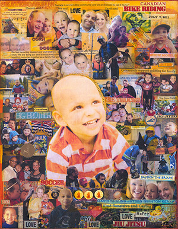

2017 Honourary Captain: Jayden the Brave
July 7, 2011 ~ June 14, 2017
Jayden Buckie Anthony DeSa was eagerly welcomed into this world on July 7, 2011. The first of three boys. Jayden was special from the beginning; He had such a contagious smile and the kindest eyes. Even at a young age it was evident that Jayden had a wise old soul; he was an incredibly caring, gentle and loving spirit.
He was in so many ways your typical little boy; He loved crafts, building and inventing things, science experiments, pillow fighting, wrestle mania, and snowmobiling with his dad. He loved superheros, monster trucks and had a special affinity for shredded hash browns.
He was so proud of his role as a big brother to Quinton and Kenyan, and he excelled at it; He was the best “biggest” brother.
He had a great sense of humour and the most joyful laugh. He had a wonderfully creative and active imagination, and much alike his favourite colour, orange, he was bright and vibrant.
But, Jayden was also a warrior. At 3 years old he was diagnosed with Acute Lymphoblastic Leukemia. Jayden spent three years battling cancer and he never complained, even in the worst moments…and there were all too many. He was resilient and stoic. He faced insurmountable feats with the strength and courage of someone far beyond his years and means, and he did it with an ever-encouraging smile. He was the rock; he was Jayden the Brave.
Despite his short life, Jayden thrived in any circumstance he was given. With an unimaginable amount of confidence, he accepted and embraced the life he was given. He knew that the simple things like playing in the park and bedtime cuddles made him just as happy as anything money could buy. He knew that little moments mean just as much as the big ones. Jayden always found strength to play, to imagine, to believe . . . and to be thankful.
Jayden passed away June 14, 2017 at the age of 5. We know he is safe in God’s arms, and that he is finally able to be free of all the burdens and pains he endured. It would be easy at a moment like this to focus on all we’ve lost- a future without our warm, curious, enthusiastic and spirited little boy whose love for life and others knew no bounds.
We can remember that he suffered, that he struggled, and that he passed away far too young. Or, we can remember that he laughed often, he fought bravely and no matter, he loved with all his heart. We choose to remember Jayden’s beautiful light and spirit, especially in these dark times.
In the ever-wise words of Dr. Seuss; please “Don’t cry because it’s over, smile because it happened”
We love you, Jayden the Brave - always and forever.
The Desa Family
Shauna, David, Quinton, Kenyon and Jayden